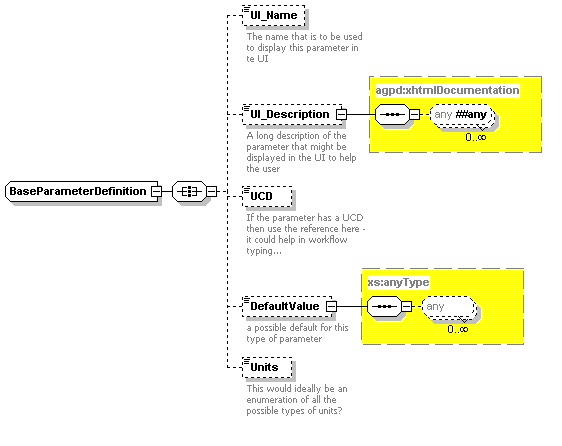

| |
A Proposal for a Common Execution Architecture Version 0.1
IVOA WG Internal Draft 2004-05-19
- Working Group:
- http://www.ivoa.net/twiki/bin/view/IVOA/IvoaWG_name
- Author(s):
- Paul
Harrison
| |
This note describes a proposal for a Common Execution Architecture (CEA) within the Virtual Observatory. It discusses the general motivation behind the design as well as detailed schema and WSDL defintions of the architecture. The scope of this document covers areas of interest to the Registry and Grid Working Groups as well as the Applications Special Interest Group.
This is an IVOA Working Draft for review by IVOA members and other interested parties. It is a draft document and may be updated, replaced, or obsoleted by other documents at any time. It is inappropriate to use IVOA Working Drafts as reference materials or to cite them as other than "work in progress." A list of current IVOA Recommendations and other technical documents can be found at http://www.ivoa.net/Documents/.
The Common Execution Architecture (CEA) is an attempt to create a reasonably small set of interfaces and schema to model how to execute a typical Astronomical application within the Virtual Observatory (VO). In this context an application can be any process that consumes or produces data, so in existing terminology could include
The CEA has been primarily designed to work within a web services calling mechanism, although it is possible to have specific language bindings using the same interfaces. For example Astrogrid has a java implementation of the interfaces that can be called directly from a java executable.
The primary requirements motivating the creation of this architecture are;
The design for this architecture has evolved from the requirements fot the Workflow/Job Execution System components within AstroGrid. It was desireable for the job execution system to have a single model for an application, so that it could deal with the (already complex) problems of scheduling, looping, conditional execution etc. without needing to have specializations for all the different types of service (SIA, Database query, Cone Search, etc.) that it might be required to invoke.
Amongst the VO specifications there was no existing model for applications that was defined at the level at which this design attempts to address. In the VOResource schema an application is defined as a Service with the interface definition. The interface defintion either relies on referring to a WSDL definition of the service, or on other schema extending the service definition to provide some specific detail as in the case of a Simple Image Access service. There is no general definition of an application in the resource.
It is clear that the WSDL model of an interface has had a large influence on the design of the CEA, but it should be remembered that the CEA is intentionally layered on top of WSDL, so that CEA controls the scope and semantics of operations. There is only one WSDL defintion for all applications, so as far as web services are concerned the interface is constant. CEA works by transporting meta information about the application interface within this constant WSDL interface.

The above sequence diagram illustrates how the various components of the CEA system interact when an application is executed. The steps are
Some point of note;
This is the main interface that is used to communicate with the application. The main methods of are (please note that there are some extra methods defined in the WSDL that are defined for experimental purposes)
The WSDL definition of this interface is stored in cvs at http://www.astrogrid.org/viewcvs/*checkout*/astrogrid/workflow-objects/wsdl/CommonExecutionConnnector.wsdl?rev=HEAD
The WSDL definition of this interface is stored in cvs at http://www.astrogrid.org/viewcvs/*checkout*/astrogrid/workflow-objects/wsdl/JobMonitor.wsdl?rev=HEAD
The objects that participate in CEA can be split into two groups
These are described in more detail in the following sections.
uml model

As this model depicts an application in CEA is really quite a simple entity consisting of 1 or more interfaces that consist of 0 or more input parameters and 0 or more output parameters.
The schema representation is shown below, and is essentially a representation of the UML model that has been coded to recognise that the same parameter can occur in several interfaces.

The description of the parameters and the parameter values are probably the heart of the CEA. It is the model for the parameters that allow us to add semantic meaning, and to give the flexibility in how the parameters are transported. The implementation is still in its infancy, but it is hoped that the parameter definition will be extented to encompass any data models that the VO produces.
The basic parameter definition from the schema is shown below

Tool
ParameterValue
The parameterValue model is simple but powerful the parameterValue element has 3 attributes
Note that the current implementation has the type and transport attributes combined as one - so that there can be a type of MySpace_VOTableReference for instance - the full implemnentation will have them separated as described above for more flexibility.
The schema associated with the CEA fall into two categories
These schema are strongly interelated (as they are imported in both the WSDL and Registry Schema), which aids programming with automated object generation tools, as there are many common objects. The schema associated with CEA are described below with links to their documentation.
| Filename (with cvs link) | Description | x3sp Documentation |
|---|---|---|
| AGApplicationBase.xsd | This schema defines most of the basic CEA objects that are imported into both the WSDL and the Registry Schema | Documentation |
| CEATypes.xsd | This defines the the message types that are passed in
queryStatus operations in the CommonExecutionConnector interface and in the MonitorJob
operation of the Job Monitor interface. |
Documentation |
| VOCEA.xsd | This defines the VOResource extensions of CeaApplication and CeaService that are used in the registry | Documentation |
| AGParameterDefinition.xsd | Contains the basic parameter definition and parameter value elements used in the other schema | Documentation |
| Workflow.xsd | This schema actually describes an astrogrid workflow document in full, but as part of this is the tool element that is passed in as a parameter to the execute method in the CommonExecutionConnector method. This tool element will be factored out into its own CEA specific schema in future. | Documentation |

This deployment shows some of the features of using the CEA
Astrogrid Implemetation
Appendix C text
These are all in-line links at the moment.